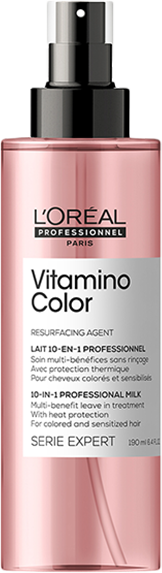

SPRAY 10W1
VITAMINO
COLOR
ZATRZYMAJ KOLOR,
UWOLNIJ BLASK.
Absolut repair
Gama stworzona z myślą o włosach koloryzowanych, aby zachować ich długotrwały kolor i blask oraz zminimalizować powstawanie niechcianych refleksów na włosach. Odżywia włosy koloryzowane, chroniąc kolor aż do 8 tygodni*. Formuła Vitamino Color oparta została na resveratrolu, silnym przeciwutleniaczu, który chroni włosy przed wolnymi rodnikami.

Efekt? Nieustanny blask,
Trwały i piękny kolor.
PRZED użyciem
po użyciu vitamino color
sposób użycia
Spryskaj umyte, wilgotne lub suche włosy.
Następnie stylizuj wedle uznania.
W przypadku dostania się preparatu do oczu, natychmiast przepłukać je wodą.